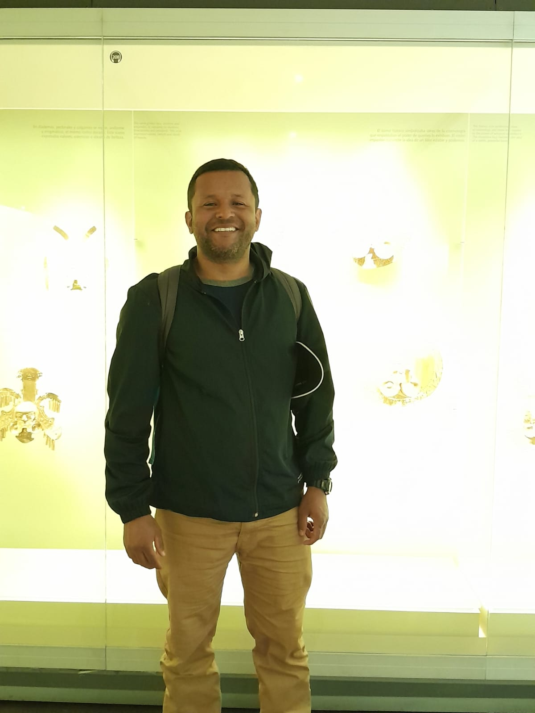
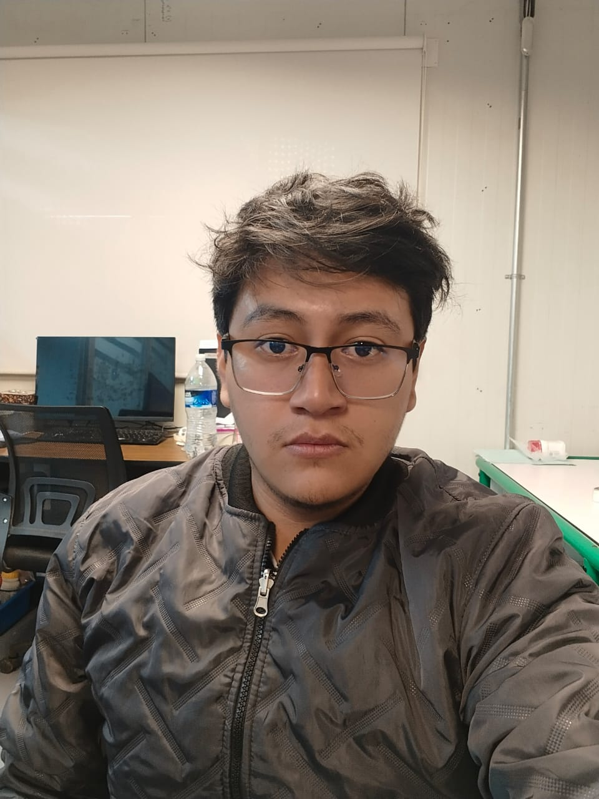
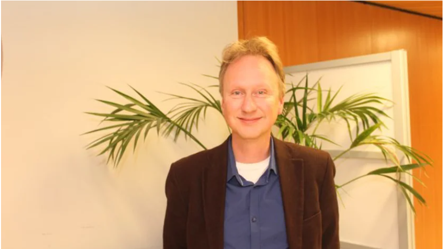

Atmospheric Intelligence for Better Decisions
LUWA connects atmospheric science, environmental observations and computational infrastructure to make advanced atmospheric information more accessible and operational.
About LUWA
LUWA is an atmospheric intelligence platform that integrates
numerical modeling, satellite observations, ground-based sensors,
and cloud computing to generate information on air quality,
emissions, and atmospheric dynamics.
Its infrastructure enables on-demand atmospheric simulations
and transforms complex scientific data into accessible products
for public institutions, researchers, businesses, and communities.
Mission
To democratize access to advanced atmospheric information
to improve the understanding and management of air quality
and emissions, especially in areas where monitoring
infrastructure is limited.
LUWA seeks to transform high-level scientific capabilities
into operational tools that support public health,
environmental management, research, and regional
decision-making.
Learn more about LUWA's capabilities, services and areas of application.
↓ Download BrochureOur Team
Scientific, technical and environmental expertise behind LUWA.
Andrés Yarce Botero
Specialist in satellite data processing and emission inversion methods. Focused on integrating high-resolution atmospheric data with advanced computational models.

Álvaro de Jesus Ochoa Calle
Expert in environmental consultancy and policy assessment. Dedicated to bridging scientific modeling and decision-making frameworks for sustainable management.

Juan Jesus Valdez Vasquez
Developer dedicated to the scientific study of environmental pollution.

Michiel van Weele
Scientific Advisor
Atmospheric scientist specializing in atmospheric composition,
air quality, climate interactions, and satellite observations.